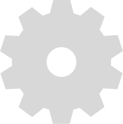

<dom-module id="h-gear">
    <template>
        <style>
            :host {
                display: inline;
            }

            #gear img {
                position: absolute;
                bottom: 70px;
                right: -20px;
                -webkit-animation: fa-spin 6s infinite linear;
                animation: fa-spin 6s infinite linear;
                float: right;
                cursor: pointer;
                opacity: .3;
            }
            @-webkit-keyframes fa-spin {
                0% {
                    -webkit-transform: rotate(0deg);
                    transform: rotate(0deg)
                }
                100% {
                    -webkit-transform: rotate(359deg);
                    transform: rotate(359deg)
                }
            }

            @keyframes fa-spin {
                0% {
                    -webkit-transform: rotate(0deg);
                    transform: rotate(0deg)
                }
                100% {
                    -webkit-transform: rotate(359deg);
                    transform: rotate(359deg)
                }
            }


        </style>

        <div id="gear">
            
        </div>
    </template>
    <script>
        "use strict";
        Polymer({
            is: 'h-gear',
            listeners: {
                'gear.tap': '_showModal'
            },
            _showModal: function () {
                console.log('modal');
            }
        });
    </script>
</dom-module>